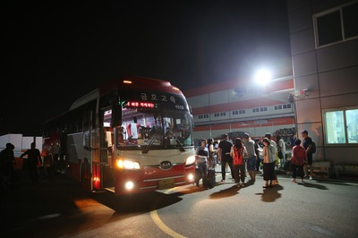
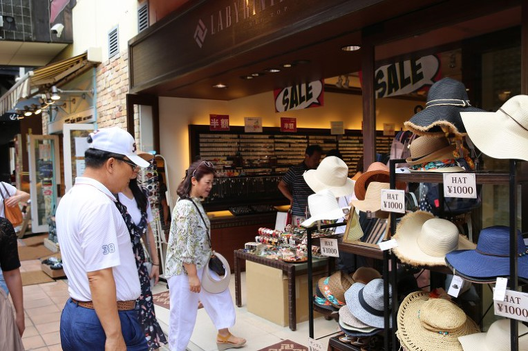

대광그룹 우수사원과 우수품질분임조 가족동반 해외연수가 8월2일부터 6일까지 일본오사카에서 진행되었습니다. 작년 중국 연수에 감동이 바로 얼마전 같은데 ^^ 일본이라니 ㅎ ㄷㄷ
 |
자 그럼 지금부터! 일본 연수의 첫째날 이야기를 시작합니다. ^^ 두~둥 8월2일 새벽1시, 함께떠날 대광가족 41명이 대광판넬 광주공장에 모였습니다. 새벽1시에도 일본연수의 들뜬마음에 피곤 NO ! |
자 이제 인천공항으로 출발~~~!!
작년에 이어 올해도 롯데관광 신성융 지점장님이 직접 동행해주셔서 원할한 티켓팅과 수하물접수 후 비행기 탑승완료까지 깔끔하게 해주셨습니다~ ♥ 감사해요~ 지점장님 ^^

혹시라도 아침을 못하고 오신 가족들을 배려해서~ 간단한 음식까지 꼼꼼히 준비해주셨습니다

1시간 30분여의 비행후 일본 간사이공항에 도착하니 리무진 버스가 대기중이었습니다^^
에어콘도 빵빵했고 리무진버스의 콘디션도 최고수준 !
4일동안 저희를 편안하고 쾌적하게 관광을 시켜줄 완벽한 준비를 하고 기다리고 있었습니다. ㅎㅎ
첫 여행시작인 고베로 출발
고베로 향하는 버스 안에서 자신을 소개하는 시간을 가지며 처음 만난 어색함을
휘~리~릭~ 날려버렸습니다
배고프다 배고파~ 금강산도 식후경이라는데 !!
고베로 이동중에 '야끼니꾸 바이킹 뷔페'에 들러 맛있고 든든한 점심식사를 하였습니다
※야끼니꾸? 불에 굽는 고기
소고기, 돼지고기, 닭고기까지 다양한 종류의 구이용 고기가 준비되어 있었습니다~
뷔페니 맘껏 먹을수 있었죠 ㅎ
고기 외에도 초밥, 면요리, 튀김, 아이스크림, 케이크 등 다양한 메뉴들을 즐길 수 있어
대광식구들 모두 신나게 먹었어요 ~ 겁~~나 배부르게 ㅎ
야~무지게 !!

디저트까지 먹어줘야~ 밥먹었다고 할 수 있죠 ㅎ
밥도 든든히 먹었겠다~ 이제 본격적으로 고베로 고고
우리어때요? ㅎ 사장님과 사모님 브~~~이
첫번째 방문한 곳은
고베에 위치한 '기쿠마사무네 주조기념관' 이었습니다
기념관 입구를 들어서면 정원이 예쁘게 꾸며져 있구요
기쿠마사무네의 주조법 소개영상을 본 후 청주와 매실주를 시음해보는 시간을 가졌습니다
" 오메~ 맛난그 ! 쪼까 더 없소~~~ㅎ "
고거시 얼마다요?
사장님 건빠이~!! 2017 대광을 위하야
오메 아부지~ 냄새만 맡아도 취한디여~~~꺼~~억
기념품 구경도 하고 전시관에서는 기념사진도 찍고요~

두번째 장소는 고베대지진을 기억하고자 조성된
지진메모리얼파크
※고베대지진은? 1995년 1월 17일 일본 효고현의 고베시와 한신 지역에서 발생한 대지진인데 일본 지진관측 사상 최대 규모의 지진으로, 6300여 명이 사망하고 1400억 달러의 피해를 낸 어마어마한 지진입니다.
고베 대지진 당시 지진으로 파손된 모습을 그대로 보여주고 있었습니다.
날씨가 참 맑아서 넘 넘 좋았지만,
한편으론 고베대지진이 일어난 그날을 그대로 기억하고 있어서 마음 한편으론 무겁기도 했답니다 ㅜㅜ
휴~ 지진..무서워 ㅡㅡ

세번째 장소는 고베의 핫플레이스~!
모자이크입니다
핫 핫 하태 ~핫태~
고베항워터프런트에 위치한 모자이크는 쇼핑, 레스토랑, 카페 등을 갖춘 복합상업시설로

각종 잡화점, 캐릭터샵이 있어 아이쇼핑하면서 시간을 보내기 좋았어요
테라스로 나가면 고베 관람차, 고베 해양박물관과 모래시계 모양의 고베포트타워가 보여서 기념사진 찍기도 좋았던 곳이에요
야경으로 보면 건물에 불빛이 들어와서 더 예쁘다고 하네요~

일본여행 첫날 마지막 장소는 온천입니다 ㅎ
새벽1시부터 시작된 하루의 피로를 풀어줄~
아~~~~조타 ~~~~~
아리마 온천 입니다
저희들이 간 곳은 아리마온천마을에 있는 타이코노유 온천 !
고베는 오사카에 인접해 있는 지역으로 야경으로도 유명하지만 3대 온천으로 손꼽히는 아리마 온천마을이 있어 온천까지 즐길 수 있는 매력적인 여행지라고 합니다~
특이하게도 황토색을 띄고 있는 금천이라는 탕이 있었는데, 물의 성분인 철분이 적갈색을 띄기 때문이라고 하네요. 근육통이나 신경통, 피부병에도 효과적이랍니다.
그 외에도 은천, 노천탕 등 다양한 탕이 있었어요.
야외 옥상에서 즐기는 노천탕이 정말 최고!
온천 뿐 아니라, 게임센터, 식당, 마사지, 선물가게 등 다양한 시설이 갖춰져 있었어요

오메~ 인자 밥묵자
와따~ 시장하요~잉
고베에서의 저녁식사는 샤브샤브였습니다.
고기는 소고기 돼지고기를 무한리필할 수 있었죠~
"아죠 겁나게 무거불드만요 ㅎ"
많이들 좌시시요~ㅎ
한잔 거허니 해불세~ 와따 조쿠만 ㅎ
시원한 맥주 한잔 속에 하루의 피로를 풀어주며
희망찬 대광의 내일을 이야기하는 참 좋은 시간이었습니다
식사를 마치고 호텔로 이동하여 짐을 풀고 다음날 일정을 준비했습니다~
리가로얄호텔이 조식이 겁나게 맛있다던디...ㅎ

내일 아침 맛있는 조식을 기대하며 잠자리에 듭니다